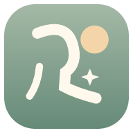

颈椎卫士 · 第二阶段素材
9 个实际模型 · 23 组 UI 切图 · 28 张界面参考 · 24 段专业男声 · 6 个交互音效
 稳姿高塔 · 六块独立积木
稳姿高塔 · 六块独立积木 舒颈飞行 · 折纸飞机
舒颈飞行 · 折纸飞机 柔光星星 · 实体与柔光
柔光星星 · 实体与柔光 后仰角度 · 独立分段
后仰角度 · 独立分段 侧伸仪表 · 独立指针
侧伸仪表 · 独立指针 单块积木 · 柔和圆角
单块积木 · 柔和圆角
第一版图标与完整 UI 素材矢量源文件、PNG 与适配前景/背景首个 debug APK 将使用此图标
新版专业男声音色已确认中文 12 段 · 英文 12 段 · 旧音色停用
图中模型直接加载交付 GLB · 当前为素材审阅，尚未开始 Android 功能开发与 APK 编译